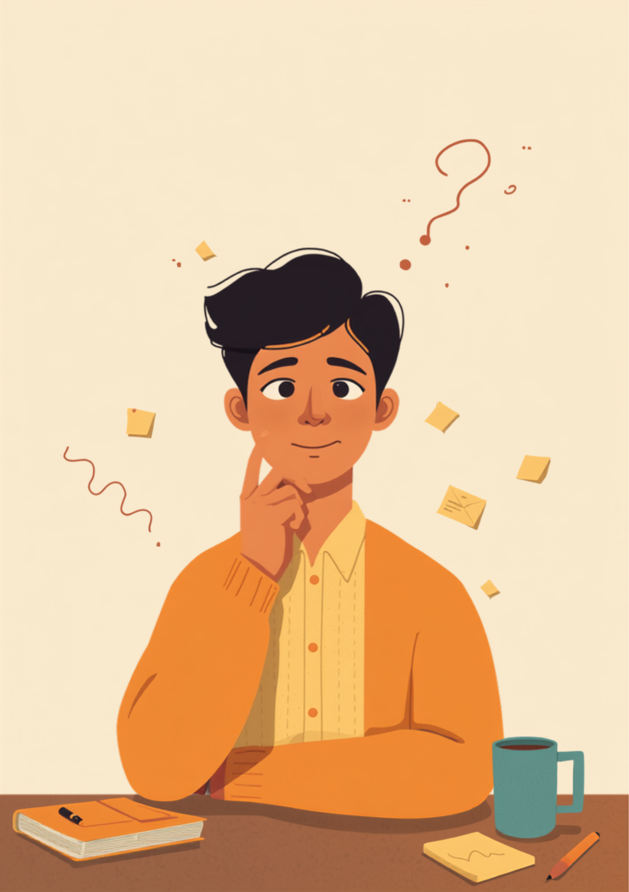
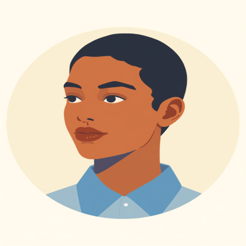

「いつもの感じでいいから」「言わなくても分かるでしょ」。ASD（自閉スペクトラム症）の特性がある方の中には、こうした曖昧な指示にどう動けばいいのか分からず、その場で固まってしまうという方がいます。指示を出した側に悪気はなくても、受け取る側は「どこまで、どうやって」が分からないまま一人で抱え込んでしまうことがあります。この記事では、就労支援の現場で聞いてきた「曖昧な指示」への戸惑いと、職場での伝え方の工夫を当事者の声をもとに整理しました（2026年7月時点の情報です）。
PR



「いつもの感じで」と言われた瞬間、頭の中が真っ白になる
「いつもの感じで」と言われても、いつもの感じが分からない
ASDは、言葉にされていない前提や「その場の空気」を推測することが難しい場合がある特性とされています。「察する」ことが難しいのは、努力不足ではなく特性によるものと考えられています。ミミ
就労支援の現場で関わってきた中で、ASD（自閉スペクトラム症）の特性がある方から繰り返し聞いてきた悩みがあります。「いつもの感じでやっといて」「適当にいい感じでまとめといて」というような、基準が言葉になっていない指示に、どう動けばいいのか分からなくなってしまうというものです。
指示を出す側は、悪気なく「察してくれるだろう」という前提で言葉を省略していることが多いようです。しかし受け取る側にとっては、「いつも」も「いい感じ」も、何を基準にすればいいのかがまったく見えない状態です。結果として、聞き返すことすらできずにその場で固まってしまったり、自己判断で動いて後から「そうじゃないんだけどな」と言われたりする場面が積み重なっていきます。
!
ASDの特性の現れ方や程度には個人差があります。この記事で挙げる内容がそのまま当てはまるとは限らないため、気になる症状や困りごとがある場合は自己判断せず、専門機関に相談することをお勧めします。
「正直言うと、入社して3ヶ月くらいはずっと胃が痛かったです。先輩に『これ、いつもの感じでまとめといて』って言われて、"いつもの感じ"って何ですか、って聞き返せなくて。結局、自己判断で作ったら全然違うものになってて、『え、なんでこうなるの』って苦笑いされました。ちゃんと聞けばよかったんですけど、そもそも何を聞けばいいのかも分からなかったんです。」
20代・女性（ASD・事務職）
相談の一コマ

相談者
上司から「適当にいい感じで直しといて」って言われるたびに、頭の中が真っ白になるんです。聞き返したら「そんなことも分からないの」って言われそうで、結局そのまま黙って作業してしまって。

ミミ
「いい感じ」のような表現は、基準が言葉になっていないぶん誰にとっても分かりにくいものなんです。分からなくて当然、というくらいに考えてもらって大丈夫ですよ。
相談者
当然なんですか…自分の理解力が足りないだけだと思っていました。
ミミ
理解力の問題ではないと思います。次の章で、なぜ曖昧な指示が分かりにくくなるのか、特性の面から一緒に整理してみましょう。
なぜ曖昧な指示だけが分かりにくいのか、特性から見る理由
「言わなくても分かるでしょ」という前提そのものが、実は人によって違う土台の上に立っているんです。ここが噛み合っていないだけ、というケースが多いように思います。ミミ
ASDの特性のひとつに、言葉にされていない暗黙のルールや文脈を推測することの難しさが挙げられることがあります。「いつもの感じ」という表現は、話し手の頭の中にある具体的なイメージを前提にしていますが、そのイメージそのものが言葉になっていないため、聞き手が同じものを想像できるとは限りません。これは「気を利かせられない」という性格の問題ではなく、情報の受け取り方や処理の仕方の特性によるものだと考えられています。
i
曖昧な指示の分かりにくさの感じ方には個人差があり、同じASDという特性でも、どこまでの表現なら伝わるかは人によって異なるとされています。気になることがあれば、支援機関や専門医に相談してみてください。
この「基準が言葉になっていない」という前提のずれに気づかないままだと、指示を出す側は「普通に伝わるはず」と思い、受け取る側は「聞くこと自体がだめなのかもしれない」と感じてしまい、双方とも悪気がないまま、すれ違いだけが積み重なっていきます。
「意味不明な行動してた自覚はあります。上司に『適当にいい感じで資料直しといて』って言われて、2時間くらいかけてグラフから配色から全部作り直したんですけど、後で見せたら『え、そこまでしなくてよかったのに』って言われて。じゃあどこまでならよかったんだよ、って一人で愚痴ってました。半年くらいこの繰り返しで、正直めちゃくちゃ疲れました。」
30代・男性（ASD・エンジニア職）
角を立てずに「具体的にしてほしい」を伝える方法
性格の話ではなく、業務上の困りごととして伝える
「曖昧な指示が苦手」ということを、好みや性格の問題として伝えると、相手によっては「わがまま」と受け取られてしまうことがあります。そうではなく、業務の精度やスピードに関わる困りごととして伝える方法が、角を立てにくいとされています。
- 「曖昧な指示だと確認に時間がかかってしまうので、期限や分量など具体的な基準をいただけると助かります」
- 「『いい感じで』の代わりに、完成イメージに近い過去の資料を一つ見せてもらえると、迷わず動けます」
- 「口頭だけだと後で忘れてしまうことがあるので、要点だけチャットでも送っていただけると助かります」
- 「分からない点をその場で質問してもいいか、先に確認させてもらえると安心です」
全部を一度に伝えようとしなくて大丈夫です。「今回だけ具体的に教えてほしい」という小さなお願いから始めても、少しずつ伝わっていくことがあります。ミミ
すべての上司や同僚が、はじめから理解してくれるとは限りません。それでも、感覚や性格の話ではなく「こう伝えてもらえると、こういう理由で助かる」という具体的な形で繰り返し伝えることが、遠回りに見えても関係を続けやすくする方法のひとつとされています。
使える配慮と、一人で抱えないための相談先
診断や「気づき」という選択肢
ASD（自閉スペクトラム症）は、子どもの頃ではなく大人になってから初めて気づく方も珍しくないとされています。診断を受けることで、自分の特性を整理し、職場での合理的配慮を求めやすくなる場合がある一方、診断を受けずに特性を理解して対処するという選択をする方もいます。どちらが正解ということはなく、本人が納得できる形を選ぶことが大切だと考えられています（2026年7月時点の情報です）。

💬 当事者の声を読む
大人になってASDと気づいた人へ
note（こねこねこねこ発達障害）
精神障害者保健福祉手帳という選択肢
ASDを含む発達障害の診断がある場合、精神障害者保健福祉手帳の取得対象になることがあります。手帳を取得すると、障害者雇用枠での就労や、通院・体調に配慮した働き方を選びやすくなる場合がありますが、等級や取得条件は個別の状況によって異なるため、詳しくは主治医や自治体の窓口に確認することをお勧めします（2026年7月時点の情報です）。

📋 体験談を読む
アスペルガーな私のやらかし人生#5 障害者手帳の取得
note（そらかな｜ソラノカナタ）
相談できる窓口
- 精神科・発達障害を専門とするクリニック（特性の評価や診断の相談）
- 職場に選任されている産業医（50人以上の事業場に選任義務あり）
- 発達障害者支援センター（診断の有無にかかわらず相談可能）
- 就労移行支援事業所（曖昧な指示への対処法を含めた就労準備や職場との調整）
ASDの特性の現れ方や、必要な配慮の内容には個人差があります。この記事の内容がそのまま当てはまるとは限らないため、実際の判断は主治医・支援者・自治体の窓口とよく相談しながら進めることをお勧めします（2026年7月時点の情報です）。
「察してよ」に応えられないのは、能力が足りないからではありません。基準を言葉にしてもらうことは、決してわがままなお願いではないはずです。
よくある質問
Q. ASD（自閉スペクトラム症）だと、なぜ曖昧な指示が分かりにくいのですか？
ASDの特性として、言葉にされていない前提や暗黙のルールを推測することが難しい場合があるとされています。「いつもの感じ」「適当に」といった表現は基準が言語化されていないため、具体的な行動に落とし込みにくいと感じる方が多いようです。能力や努力の問題ではなく、情報の受け取り方の特性によるものと考えられています。
Q. 上司に「具体的に指示してほしい」とどう伝えればいいですか？
性格や好みの問題としてではなく、業務上の困りごととして伝える方法が助けになる場合があります。「曖昧な指示だと確認に時間がかかってしまうので、期限や分量など具体的な基準をいただけると助かります」のように、自分の特性と相手へのお願いをセットで伝えると角が立ちにくいとされています。
Q. ASD（自閉スペクトラム症）は大人になってから診断を受けられますか？
大人になってから初めて診断を受ける方は珍しくないとされています。精神科や発達障害を専門とするクリニック、発達障害者支援センターなどで相談できます。診断の有無にかかわらず、自分の特性を理解して対処法を考えることは可能です（2026年7月時点の情報です）。
Q. 曖昧な指示で困っていることを、どこに相談すればいいですか？
職場に選任されている産業医、就労移行支援事業所、発達障害者支援センターなどが相談先として挙げられます。診断を受けている場合は、精神障害者保健福祉手帳の取得によって障害者雇用枠での就労や職場の合理的配慮を受けやすくなるケースもあります（2026年7月時点の情報です）。
Q. ASDがあると、どんな仕事が向いていますか？
一概には言えませんが、業務内容や手順があらかじめ明確になっている仕事、口頭よりも文書でのやり取りが中心の仕事は選択肢の一つとされています。向き不向きは特性の現れ方や本人の希望によって異なるため、就労移行支援機関などに相談しながら探すことをお勧めします。
この5点を頭に置いておくだけで、少し気持ちが軽くなるかもしれません
PR


一人で抱え込む前に、今の気持ちを話してみませんか
「まだ迷っている」段階でも大丈夫です。mimemimeの無料相談は、今の状況の整理から一緒に始められます。
無料で話してみる
おのざる
mimemime代表。就労支援の現場経験をもとに、障がいのある方の働く不安に寄り添う記事を執筆。